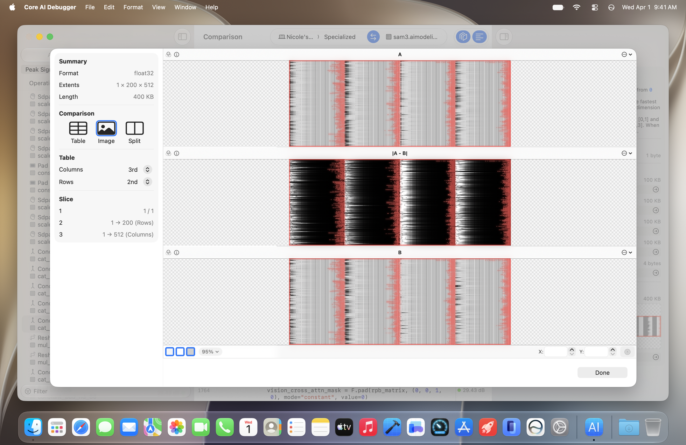
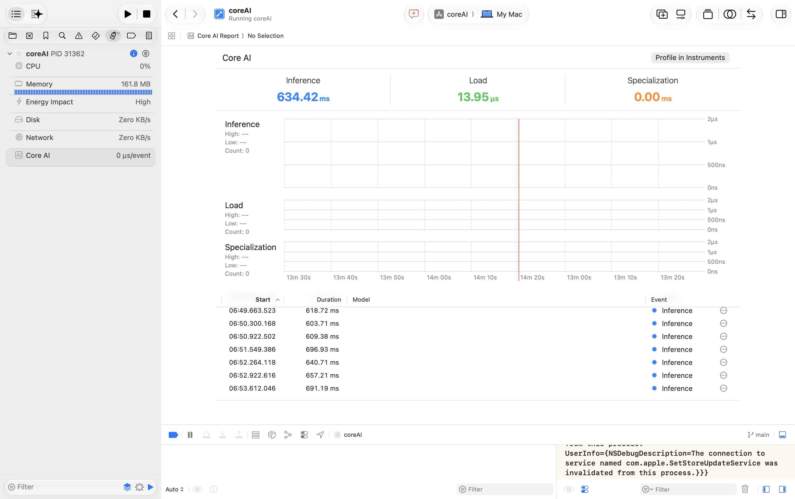
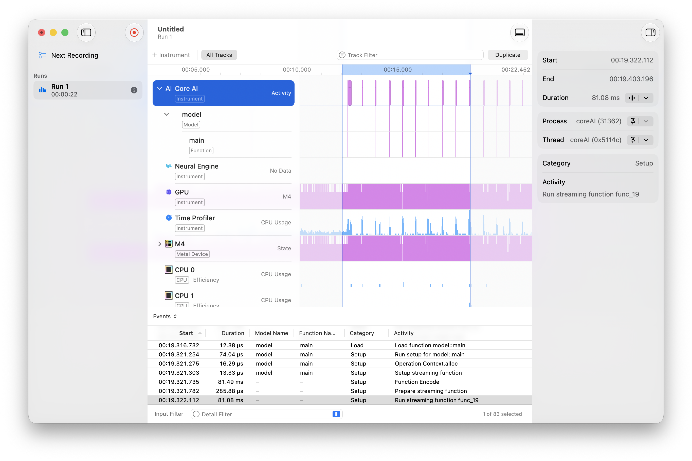

通过 CoreAI 部署 Stable Diffusion 1.5 端到端工作流
本报告总结如何用CoreAI把 Stable Diffusion 1.5 从 Hugging Face / PyTorch 模型导出为 .aimodel 可执行资产，并在 macOS SwiftUI 应用中通过 CoreAI 相关接口完成本地文生图推理。
Overview
当前 workflow 是一个清晰的部署链路：先用 Apple 的 coreai-models 导出器把 Stable Diffusion 1.5 转成 CoreAI 资产，再由 Xcode 将完整导出目录打进 app bundle，最后在 SwiftUI app 中通过 CoreAI diffusion pipeline 加载模型并执行本地推理。
通过 uv run --no-dev coreai.diffusion.export 调用 Apple 导出器，下载源权重并生成 CoreAI 模型目录。
Xcode 将 .tools/coreai-models/exports/stable-diffusion-v1-5 作为 folder resource 复制进 app。
Swift app 使用 CoreAIDiffusionPipeline 的 StableDiffusionPipeline 加载模型目录并生成 CGImage。
.aimodel 资产与 Swift runtime 接口。导出阶段生成可部署资产；运行阶段由 CoreAI runtime 承接本地执行，CoreAIDiffusion 再把底层细节封装成 app 可直接调用的 diffusion API。
| 层级 | 项目中使用的模块 / 接口 | 职责 |
|---|---|---|
| 导出工具链 | coreai.diffusion.export |
把 runwayml/stable-diffusion-v1-5 转成 CoreAI diffusion export 目录。 |
| CoreAI 资产 | TextEncoder.aimodel, Unet.aimodel, VAEDecoder.aimodel, VAEEncoder.aimodel |
保存可由 CoreAI runtime 加载执行的模型组件，以及 tokenizer 和 metadata。 |
| Swift 封装层 | CoreAIDiffusionPipeline, StableDiffusionPipeline, PipelineConfiguration |
封装文本编码、scheduler、U-Net denoise loop、VAE decode 和进度回调。 |
| 应用层 | DiffusionController, ContentView |
管理模型目录、用户参数、异步任务、生成状态和图像展示/保存。 |
最终效果展示
Section 1: Export
导出阶段的输入是 Hugging Face 上的 Stable Diffusion 1.5 源模型，输出是一个完整的 CoreAI diffusion 模型目录。项目 README 中记录的标准命令如下：
git clone https://github.com/apple/coreai-models.git .tools/coreai-models
cd .tools/coreai-models
uv run --no-dev coreai.diffusion.export \
runwayml/stable-diffusion-v1-5 \
--output-dir exports导出完成后，项目期望产物位于：
.tools/coreai-models/exports/stable-diffusion-v1-5当前导出目录的关键文件结构包括：
stable-diffusion-v1-5/
metadata.json
tokenizer/
tokenizer_config.json
special_tokens_map.json
merges.txt
vocab.json
TextEncoder.aimodel/
metadata.json
main.mlirb
main.hash
Unet.aimodel/
metadata.json
main.mlirb
main.hash
VAEDecoder.aimodel/
metadata.json
main.mlirb
main.hash
VAEEncoder.aimodel/
metadata.json
main.mlirb
main.hash导出阶段 CoreAI 做了什么
- 把扩散模型拆成可独立执行的 CoreAI 组件：文本编码器、U-Net、VAE decoder/encoder。
- 将模型图和权重保存为
.aimodelasset，每个组件内部包含二进制模型表示main.mlirb和 metadata/hash。 - 保留 tokenizer 与 pipeline metadata，使 Swift 侧可以直接恢复完整文生图 pipeline，而不是手写每个 tensor 输入输出。
Section 2: Integrate and Inference
集成阶段分为“把模型目录加入 app bundle”和“运行时加载 pipeline”两步。Xcode project 里将导出目录声明为资源：
/* stable-diffusion-v1-5 */
path = ".tools/coreai-models/exports/stable-diffusion-v1-5";
sourceTree = SOURCE_ROOT;
/* CoreAIDiffusion Swift package */
repositoryURL = "https://github.com/apple/coreai-models";
productName = CoreAIDiffusion;
Swift 代码中直接使用的核心模块是 CoreAIDiffusionPipeline：
import CoreAIDiffusionPipeline
@MainActor
final class DiffusionController: ObservableObject {
@Published var prompt = "A cinematic photograph of a lighthouse above a stormy sea at dusk"
@Published var negativePrompt = "blurry, low quality, distorted"
@Published var steps = 20
@Published var guidanceScale = 7.5
@Published var seed: UInt32 = 42
private var pipeline: StableDiffusionPipeline?
@Published private(set) var modelURL: URL?
}模型选择与校验
app 启动时优先加载 bundle 内的 stable-diffusion-v1-5 目录；用户也可以选择另一个兼容导出目录。校验逻辑检查 metadata.json 或 .aimodel 文件是否存在：
private var bundledModelURL: URL? {
Bundle.main.url(forResource: bundledModelName, withExtension: nil)
}
private func isModelDirectory(_ url: URL) -> Bool {
let fileManager = FileManager.default
if fileManager.fileExists(atPath: url.appendingPathComponent("metadata.json").path) {
return true
}
guard let contents = try? fileManager.contentsOfDirectory(
at: url,
includingPropertiesForKeys: nil,
options: [.skipsHiddenFiles]
) else { return false }
return contents.contains { $0.pathExtension == "aimodel" }
}构造推理配置
用户在 UI 中输入 prompt、negative prompt、steps、guidance scale 和 seed。Controller 将这些参数转换成 PipelineConfiguration：
let configuration = PipelineConfiguration(
prompt: prompt.trimmingCharacters(in: .whitespacesAndNewlines),
negativePrompt: negativePrompt.trimmingCharacters(in: .whitespacesAndNewlines),
seed: seed,
stepCount: steps,
guidanceScale: Float(guidanceScale),
schedulerType: .dpmSolverMultistep,
lazyModelLoading: true
)加载 pipeline 并生成图像
StableDiffusionPipeline.load(from:) 负责从 CoreAI export 目录恢复完整 pipeline；generateImages(configuration:) 发起文生图推理，并通过回调更新进度。
private func loadPipelineIfNeeded() async throws -> StableDiffusionPipeline {
if let pipeline { return pipeline }
guard let modelURL else { throw ModelError.noModel }
state = .loading
progress = 0
let loaded = try await StableDiffusionPipeline.load(from: modelURL)
pipeline = loaded
return loaded
}
let activePipeline = try await self.loadPipelineIfNeeded()
self.state = .generating
self.progress = 0
let result = try await activePipeline.generateImages(configuration: configuration) { update in
let fraction = Double(update.step + 1) / Double(max(update.totalSteps, 1))
Task { @MainActor in
self.progress = fraction
}
return !Task.isCancelled
}
self.generatedImage = result.images.firstUI 与输出
ContentView 使用 SwiftUI 表单绑定 controller 状态。生成成功后，generatedImage 被显示为可缩放图片，并可通过 ImageIO 保存为 PNG。
if let image = controller.generatedImage {
Image(decorative: image, scale: 1)
.resizable()
.scaledToFit()
.padding(32)
} else {
ContentUnavailableView(
"No Image",
systemImage: "photo",
description: Text(controller.state.message)
)
}AIModel / NDArray 这类底层 CoreAI runtime API；它使用 CoreAIDiffusion 提供的高层 diffusion pipeline。该 pipeline 在内部负责加载多个 .aimodel 组件、准备 tensor、执行 denoising steps、调度 scheduler，并把最终 latent 解码为图像。
| 代码位置 | 关键接口 | 作用 |
|---|---|---|
coreAI/DiffusionController.swift |
StableDiffusionPipeline.load(from:) |
从 bundle 或用户选择的目录加载 CoreAI diffusion 模型。 |
coreAI/DiffusionController.swift |
PipelineConfiguration |
封装 prompt、negative prompt、seed、steps、guidance scale、scheduler 等推理参数。 |
coreAI/DiffusionController.swift |
generateImages(configuration:progress:) |
执行文生图推理，返回生成图片并提供 step 级进度。 |
coreAI/ContentView.swift |
@StateObject, Form, Image, ProgressView |
呈现输入参数、推理状态、进度和输出图像。 |
3. 调试工具
除了 app 级状态和日志，这个项目还可以用 Core AI Debugger、Xcode Debug Gauge 与 Instruments 观察 CoreAI 模型的结构、加载、推理、设备执行和正确性。三者关注点不同：Core AI Debugger 更靠近模型本身，适合在 app 集成前查看模型图、运行模型并验证输出；Debug Gauge 适合快速确认一次运行的总体性能状态；Instruments 适合展开时间线并定位具体 CoreAI activity。
Core AI Debugger
Core AI Debugger 是 Apple 提供的 CoreAI 模型调试工具。它用于连接建模和部署阶段：可视化 CoreAI 模型结构，追踪 operation 之间的数据流；选择配对设备进行 specialization 并运行模型；载入 reference intermediate values 后比较同步点上的相似度指标，例如 PSNR，从而定位导出后或设备执行时的数值 divergence。
对本项目来说，它适合放在导出后、app 集成前的验证阶段：先检查 TextEncoder.aimodel、Unet.aimodel、VAEDecoder.aimodel 等组件的结构与数据流，再用 reference run 检查关键中间 tensor，最后再进入 Swift app 侧的 pipeline 集成和性能调试。

Xcode Debug Gauge / Core AI Report
Debug Gauge 的 Core AI Report 可以在 app 运行时直接看到 CoreAI 相关指标，例如 inference、load、specialization 的耗时，以及进程级 CPU、memory、energy impact。截图中单次推理事件大约在 600-700 ms 区间，load 只有微秒级，说明模型加载完成后，主要时间花在实际 inference 上。

Instruments / Core AI Timeline
Instruments 的 Core AI 视图能进一步展开到时间线、模型函数、GPU / Neural Engine / CPU 轨道，以及具体 activity。截图中选中的事件是 Run streaming function func_19，持续约 81 ms；下方事件表还显示了 Load function model::main、Run setup for model::main、Function Encode、Prepare streaming function 等阶段。这些信息用于判断开销来自模型加载、函数 setup、编码阶段，还是 streaming inference 本身。

| 工具 | 主要用途 | 本项目中关注的信号 |
|---|---|---|
| Core AI Debugger | 在 app 集成前检查 CoreAI 模型本身。 | 模型结构、operation 数据流、设备 specialization、reference output / intermediate tensor 对比、PSNR 等正确性信号。 |
| Debug Gauge / Core AI Report | 快速查看一次 app 运行中的 CoreAI 汇总指标。 | Inference 时长、load 时长、specialization 时长、memory、energy impact。 |
| Instruments / Core AI | 按时间线分析 CoreAI activity 和设备执行轨道。 | 模型函数 setup、function encode、streaming function、GPU / CPU / Neural Engine 使用情况。 |
结论
CoreAI框架覆盖了模型端测部署到全流程：模型导出、端侧推理、调试，显著降低部署复杂度。
PyTorch 模型到 Apple silicon 本地执行之间的模型格式、编译表示、runtime 加载、设备执行和推理观测能力全部统一起来 app 侧不需要重新实现底层模型执行管线，只需要集成导出的资产并调用高层 Swift API。